Implementing EROS
-
The EmoTree
-
Limitations and how I countered them
- To create the original EmoTree, the paper used GPT4 for a number of requirements. However, GPT4 can turn out to be expensive. And, to counter this limitation, I used other local models ->
- spaCy was used for noun/noun-phrase extraction from the captions even in the creation of the EmoTree.
- Zero Shot Classifier
was used to find the noun that brings out a certain emotion (valence) in the caption
and
to find the best target emotion noun out of the 50 sampled nouns while building the EmoTree
- Mistral-7B-Instruct-v0.3
was used to create the motifs.
-
Now, to sample 50 nouns + find the best noun(2 secs) + create a motif (13.7 secs)
takes around 16 secs total on the GPU.
This means, all the 95k training images would take around 18 days.
I, unfortunately, do not have access to the kind of resources that could help with that. So, I had to engineer something smaller that counters the limitation while still retaining the logic of the emotree.
-
I re-clustered the images into 57 clusters for each of the original 8 emotions from the Dataset (instead of using a similarity factor).
Why 57?I will talk about that in the next point.
-
Now, the entire reason to cluster images is so that later on, when the user uploads their own image, using the tree they can go to a cluster that is semantically close to their image. This way, the valence change can happen smoothly. And to keep that smoothness, having more clusters is important.
So, based on the resources I had access to, the maximum number of clusters I could create per emotion were 57.
-
From Each of the 57X8 clusters:
- Extracted their respective captions
- Sampled 50 nouns from the target emotion's vocabulary, (did it for both positive and negative)
- Selected the noun that is most semantically coherent to the caption, (using zero shot classifier)
- Used this noun in Mistral to get the motif
You will observe that the aspect of having multiple source concepts per cluster, which each in turn have multiple target concepts per target valence, is not a part of the EmoTree.
I chose to keep only 1 source concept per cluster and 1 target motif for each target valence.
This decision was made because I expected more clusters with fewer target concepts to generate better images. Additionally, I chose to keep better semantic coherence rather than randomness through multiple target motifs.
-
RESULTS
Base valence: Negative
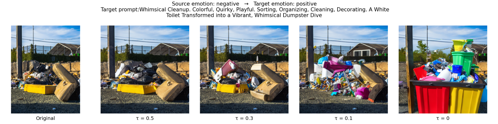
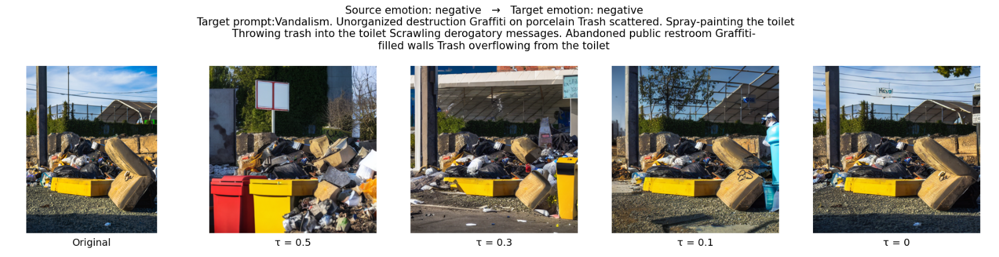
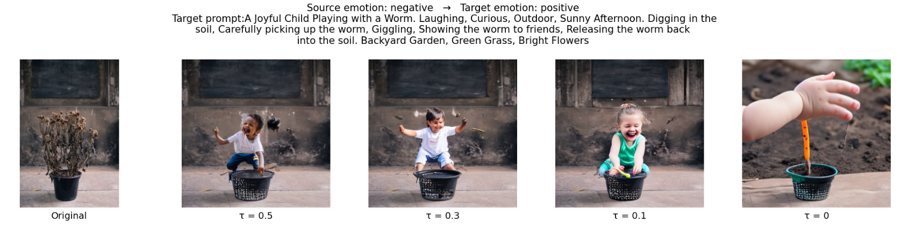
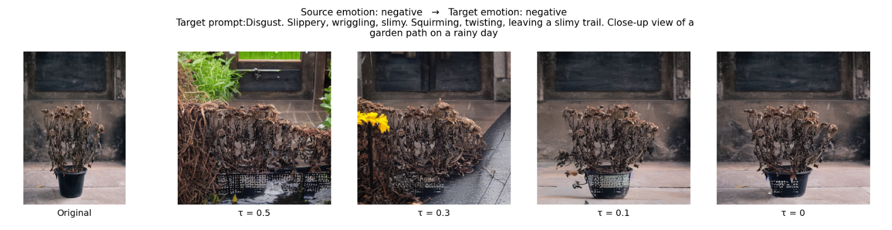
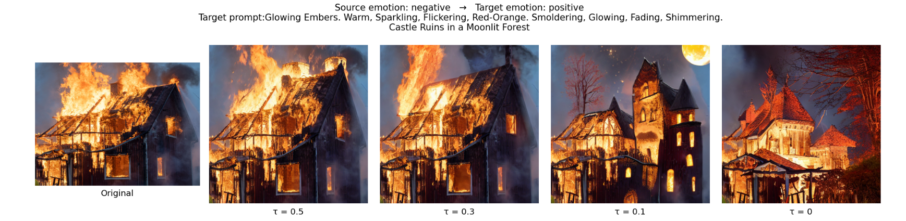
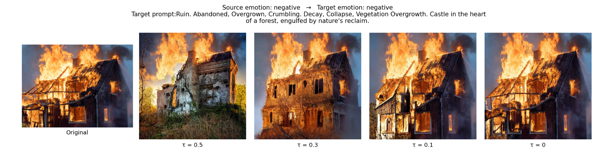
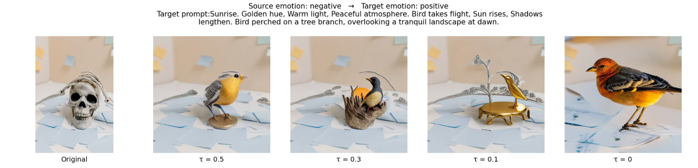
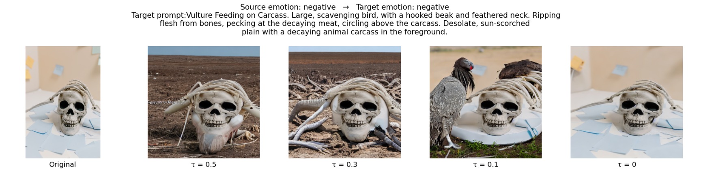
Base valence: Positive
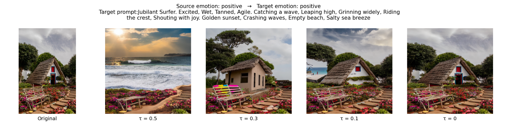
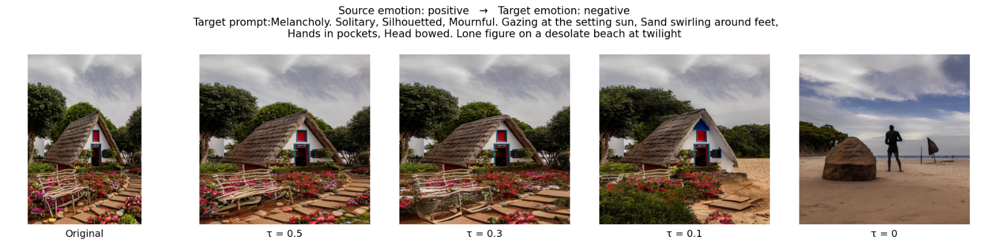
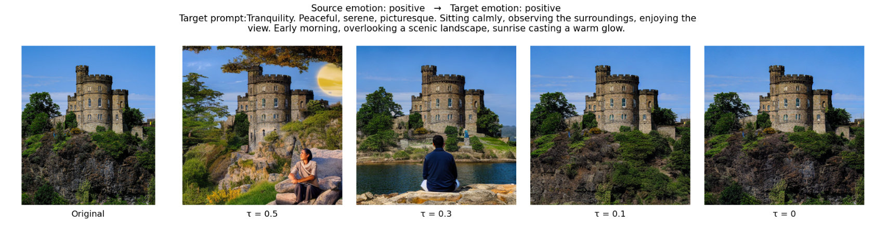
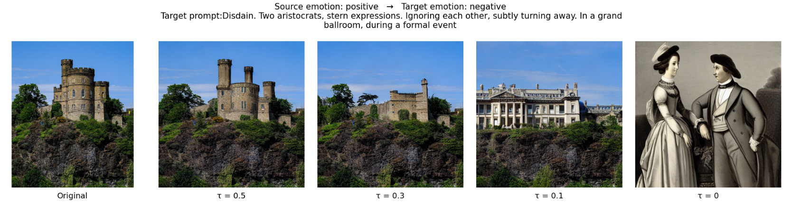
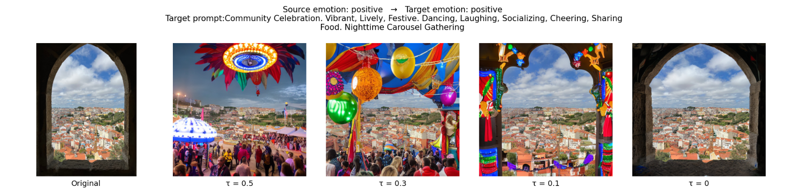
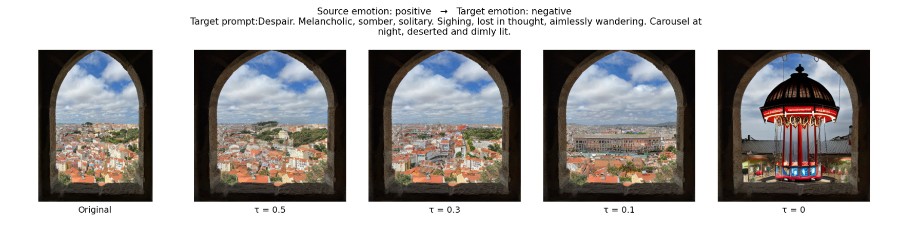
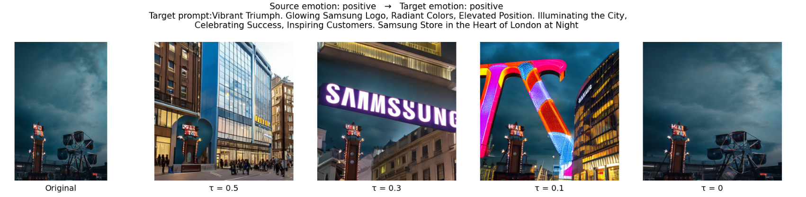
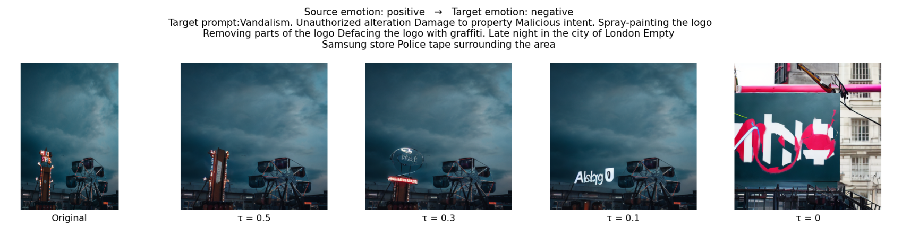
-
Discussion
Evidently, Some of the results look a little distorted because of not being able to find an appropriate target concept. Thus, even with a sematically close cluster, the lack of a semantically coherent source concept (due to only 1 per cluster) and thus, motifs, some of the images generated were not as meaningful as we would want them to be.
Some images were probably unable to find better semantic base coherence itself due to more general clustering.
It would be interesting to see if reducing the number of clusters to half and doubling the source concepts per cluster would lead to better results.
Additionally, you will observe that humans are generated with very distorted faces (I generated other examples too where the same distortion occurred). Could that be because of the number of generation steps reduced to 50? It would be interesting to experiment and see.
-
Future trials
In the future, even with limited resources, I would like to try and add atleast 1 more source concept per cluster.
I would also like to experiment with the actual generation of the image to see if there is a way to repair the distorted human faces.
Links
Project Links
- Link to Github repository.
- Link to the blog where more details are available on how I implemented every module + the engineering decisions made.
My Website
- It has information on my Work experience, University projects and personal projects.
- Link to the website.
YouTube Channel (@FunWithCSAndMaths)
- I post videos on different Mathematics and Computer Science concepts.
- Link to the channel.